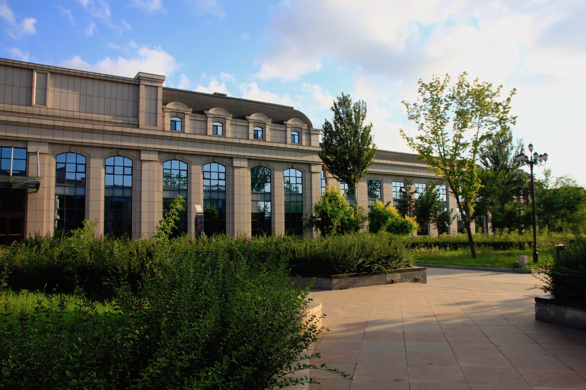
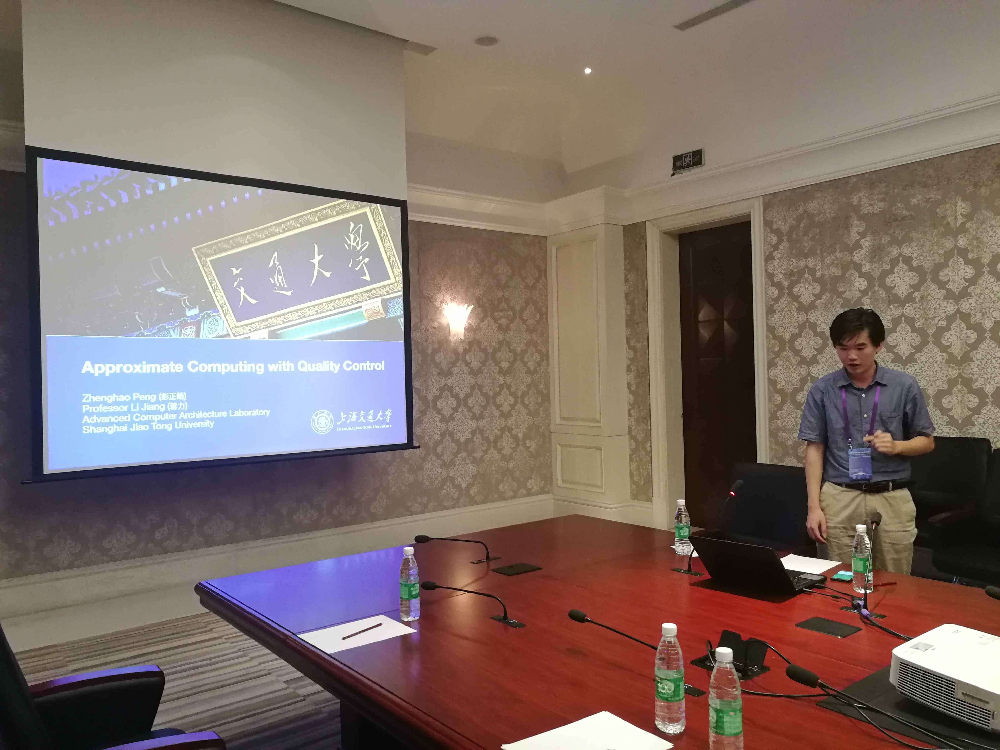
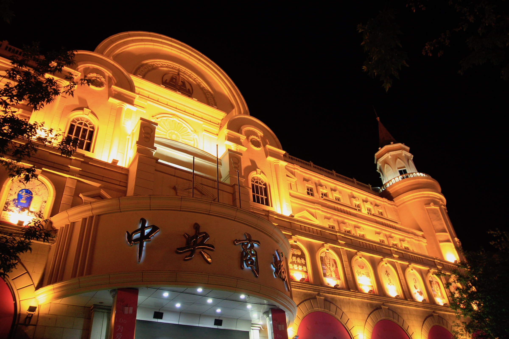
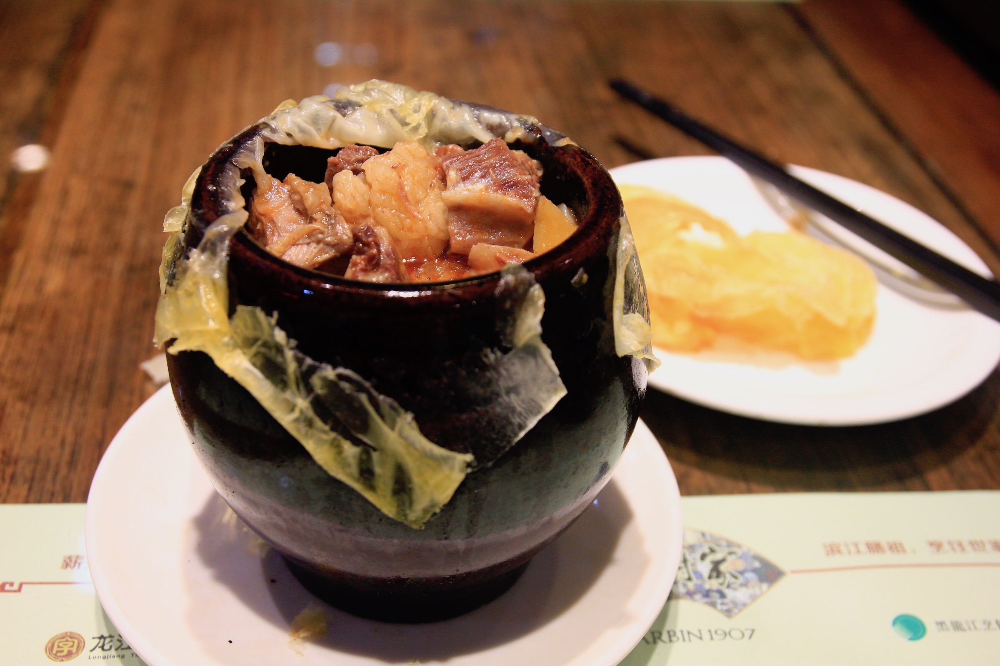

I visit Harbin, the captital of Heilongjiang Province, in 15 of August, 2018. The reason I came here is to praticipate in a great confence in China: China Testing Conference 2018 (CTC’18). I delivered a 15 minutes speech on approximate computing. Here is the link of the slides (English): PDF

This presentation introduces the works of our team accepted to ICCAD’18 in the section of ICCAD Pre-conference in CTC’18. Concreately, my work “AXNet: ApproXimate computing using an end-to-end trainable neural network” and my fellow’s work “Invocation-driven Neural Approximate Computing with a Multiclass-Classifier and Multiple Approximators” were included.

Harbin is a great city, which makes me remind my experience in Berkeley. Here is cool all day and the barlock style archetecture are fansinating. One hundred years ago, Harbin became a great city due to tremendous migration of foreign people, especially Ruassin and Juwish, triggered by the buildup of sophisctaed railway network.

The food here compose both traditional Man’s food and taste of central China along with the migration from north China platue as well as Russian.
I have heard about the economic in nowadays East-Western China. This trip also provides some evidence: At 9:00 PM the streets become empty except the barbeque shops and massage shops (you know what they are, right?). Many building are totally light-free at night. The road are extremely dark, maybe because of the absence of light pollusion.
Thanks to professor Li Jiang, who invited me to join this conference. This my first trip visited to “East-Western Triple Provinces”, even though it’s culture impact me for so long. I bring 11 sticks of Harbin Red-Sausage and 3 bottels Gewas to my friends and family. Wish they like them!